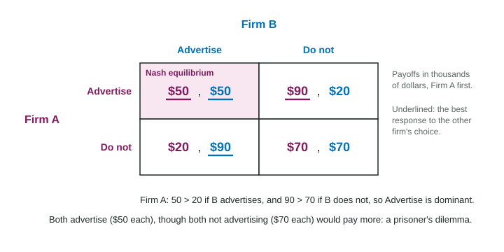

Oligopoly and Game Theory
In an oligopoly a few interdependent firms must consider each other's choices, which a payoff matrix shows.
Part 1 · Hook
Why this matters
Part 2 · Before you start
What this builds on
Part 3 · Prerequisite check
Quick check before you start
1. An oligopoly is a market with
- a few large, interdependent firms
- one seller
- many firms selling identical products
- many firms selling differentiated products
Show the answer
A few firms, each affected by the others' choices.
- Correct: a few large, interdependent firms:
- one seller:
- many firms selling identical products:
- many firms selling differentiated products:
2. A firm with market power produces where
- MR = MC
- P = MC
- P = ATC
- TR is largest
Show the answer
MR = MC, with the price from demand.
- Correct: MR = MC:
- P = MC:
- P = ATC:
- TR is largest:
Part 4 · See it
See it first

Part 5 · Step by step
How it works, step by step
- A few firms are interdependenteach firm's best choice depends on what its rivals choose
- A firm compares its own payoffs with the rival's choice held fixedit finds its best response to each of the rival's choices
- One strategy is the best response to every choice of the rivalit is a dominant strategy (proved with both comparisons)
- Each firm is making its best response to the otherthe cell is a Nash equilibrium: neither gains by switching alone
- In a prisoner's dilemma each firm's dominant strategy lowers joint profitcollusion would pay the group, but each firm gains by cheating, so cartels are unstable
Part 6 · Key ideas
Key ideas
- Oligopoly: a few interdependent firms, barriers to entry. Game theory studies their choices with a payoff matrix: the row player's payoff is listed first.
- Best response: hold the rival's choice fixed and compare only your own payoffs. Do this for each of the rival's choices.
- Dominant strategy: best whatever the rival does. Prove it (or that there is none) with both comparisons, with numbers.
- Nash equilibrium: each player's choice is a best response to the other's. There may be one, several or none: check every cell. The largest combined payoff is not, by itself, a Nash equilibrium.
Part 7 · Misconception
A common mistake
The wrong idea: A firm's dominant strategy is the strategy that contains the largest payoff in the matrix.
What actually happens: A dominant strategy must beat the firm's other strategies against each of the rival's choices. Check one comparison per rival choice, with numbers: the strategy holding the single largest payoff may lose the other comparison.
Part 8 · Check yourself
Check yourself
Exam-style questions. Anything you miss goes into your review queue.
Graph
Two cafes choosing prices (daily profit in dollars, Ember Cafe first)
| Tidewater Cafe | |||
|---|---|---|---|
| High price | Low price | ||
| Ember Cafe | High price | $60, $60 | $20, $80 |
| Low price | $80, $20 | $40, $40 | |
1. Ember Cafe and Tidewater Cafe (invented) are the only cafes in a village, and each sets its price for the week without knowing the other's choice. In each cell, Ember's daily profit is listed first. Mark each cafe's dominant strategy, if it has one, and every Nash equilibrium.
| Tidewater Cafe | |||
|---|---|---|---|
| High price | Low price | ||
| Ember Cafe | High price | $60, $60 | $20, $80 |
| Low price | $80, $20 | $40, $40 | |
Work on the matrix (it needs JavaScript), then check.
Show the answer
Ember: if Tidewater prices high, $80 from Low beats $60 from High; if Tidewater prices low, $40 from Low beats $20 from High. Low wins both comparisons, so Low is dominant. Tidewater's payoffs are the mirror image, so Low is dominant for it too. Neither gains by switching alone from (Low, Low), the only Nash equilibrium.
- Key: Ember Cafe: Low price; Tidewater Cafe: Low price. Nash equilibria: (Low price, Low price)
2. Which statement correctly shows that Low price is Ember Cafe's dominant strategy?
- 80 > 60 if Tidewater prices high, and 40 > 20 if Tidewater prices low
- 80 is the largest payoff that Ember can earn in any cell, so Low wins
- 40 + 40 = 80 is less than 60 + 60 = 120
- 40 > 20 if Tidewater prices low, so Low is better
Show the answer
A dominant strategy is better whatever the rival does, so it takes one comparison for each of Tidewater's choices: 80 > 60 when Tidewater prices high and 40 > 20 when Tidewater prices low.
- Correct: 80 > 60 if Tidewater prices high, and 40 > 20 if Tidewater prices low: Right: Low is better against each of Tidewater's choices.
- 80 is the largest payoff that Ember can earn in any cell, so Low wins: The single largest payoff does not prove a strategy wins against each choice of the rival.
- 40 + 40 = 80 is less than 60 + 60 = 120: That compares combined payoffs, which says nothing about Ember's best choice.
- 40 > 20 if Tidewater prices low, so Low is better: One comparison is not enough; check Tidewater pricing high too.
3. Which cell gives the two cafes the largest combined profit?
| Tidewater Cafe | |||
|---|---|---|---|
| High price | Low price | ||
| Ember Cafe | High price | $60, $60 | $20, $80 |
| Low price | $80, $20 | $40, $40 | |
Work on the matrix (it needs JavaScript), then check.
Show the answer
Add the two payoffs in each cell: 120, 100, 100 and 80. Both pricing high gives $120 together.
- Key: largest combined payoff: (High price, High price)
4. The cafes would both earn more if both priced high. Why do they end up both pricing low?
- Pricing low gives each cafe the largest payoff in the matrix
- Each cafe gains by pricing low whatever the other does
- Customers will not pay high prices at either cafe
- The cafes agree to price low to keep rivals out of the village
Show the answer
From (High, High), each cafe gains by switching alone to Low ($80 instead of $60), so High is not stable. Each one's dominant strategy is Low, and the result is worse for both: a prisoner's dilemma.
- Pricing low gives each cafe the largest payoff in the matrix: $80 is the largest, but they reach (Low, Low) with $40 each; the logic is dominance.
- Correct: Each cafe gains by pricing low whatever the other does: Right: Low is dominant for both, giving a prisoner's dilemma.
- Customers will not pay high prices at either cafe: At (High, High) both cafes still earn $60, so customers do buy.
- The cafes agree to price low to keep rivals out of the village: They choose separately; no agreement is described.
5. A cell of a payoff matrix is a Nash equilibrium when
- neither player can gain by changing its strategy alone
- it gives the largest combined payoff
- both players earn the same payoff
- one player earns its largest payoff in the matrix
Show the answer
In a Nash equilibrium each player is making its best response to the other's choice, so neither can gain by changing its own strategy alone.
- Correct: neither player can gain by changing its strategy alone: Right: each choice is a best response to the other.
- it gives the largest combined payoff: The joint-payoff cell may not be stable; in a prisoner's dilemma it is not.
- both players earn the same payoff: Equal payoffs have nothing to do with whether either player would switch.
- one player earns its largest payoff in the matrix: The other player may want to switch from that cell.
Scenario
Two streaming services choose a release day
Orrin and Velo (invented) are the two largest streaming services in a country. Each is releasing its big new series and picks a release day, Friday or Tuesday, at the same time. Releasing on the same day splits viewers. The payoffs are the new subscribers each wins, in thousands, with Orrin's payoff first.
| Velo | |||
|---|---|---|---|
| Friday | Tuesday | ||
| Orrin | Friday | 20, 20 | 50, 40 |
| Tuesday | 40, 50 | 10, 10 | |
6. Mark each service's dominant strategy, if any, and every Nash equilibrium. (Payoffs are thousands of new subscribers; Orrin's are listed first.)
| Velo | |||
|---|---|---|---|
| Friday | Tuesday | ||
| Orrin | Friday | 20, 20 | 50, 40 |
| Tuesday | 40, 50 | 10, 10 | |
Work on the matrix (it needs JavaScript), then check.
Show the answer
Orrin: if Velo picks Friday, Tuesday is better (40 > 20); if Velo picks Tuesday, Friday is better (50 > 10). Its best choice changes, so it has no dominant strategy, and Velo's payoffs mirror Orrin's. There are two Nash equilibria, (Friday, Tuesday) and (Tuesday, Friday): in each, neither gains by switching alone.
- Key: Orrin: no dominant strategy; Velo: no dominant strategy. Nash equilibria: (Friday, Tuesday), (Tuesday, Friday)
Part 9 · Summary
Summary
Part 10 · Up next
What comes next
Part 11 · Connections